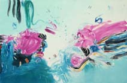

|
carolyn
ellingson - artist
|
|

Rocco, II - Monotype 29"h x 41" wide |
|
About me: I am a San Francisco artist known for my strong abstract images and clean, decisive and exciting color. My origins are in Chicago and Minneapolis where I earned advanced degrees from The University of Minnesota. I moved to California in 1983 and maintain a studio at Hunter's Point Shipyard. I create non-representational oil and acrylic paintings, monotypes, pastels and watercolors. I was interviewed in the June 1997 issue of the online publication Feminista! This is a feminist publication which contacted me for the interview. I have never considered myself a feminist per se, but perhaps I am after all -- read this interview and decide for yourself. I believes every woman has at least a few feminist stories in her life repertoire. The interview conducted by Leigh Anne Jones reveals what I feel it's like to be an artist here in San Francisco and what I thinks it takes for anyone to be an artist. The title of the article is, "Pick up the brush, the chalk, the clay." My images are an integral part of this article, and were chosen and placed by the Editor, Juliette Page. More of my images can be found as links on the front page of the June issue of Feminista! I no longer hold the job mentioned in the interview article but am presently studying to become a website designer in addition to continuing to work as a fine artist.
The following is a short list of selected
collectors:
|
|
This
website design, animation, photographs, and underlying art © Carolyn
Ellingson year 2002, all rights reserved (except where noted).
|